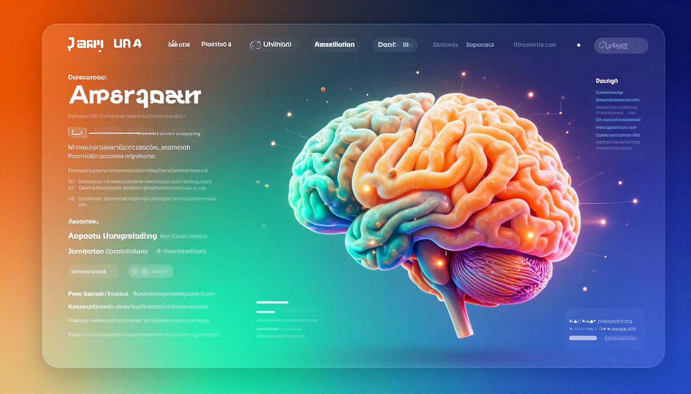

Jasper AI Review (2026): Best AI Marketing Tool?

What Is Jasper AI?
Jasper AI is a marketing-focused AI writing platform that helps businesses create on-brand content at scale. Unlike general-purpose AI assistants, Jasper is specifically designed for marketing teams with features like brand voice, campaign management, and workflow automation.
Key Features
- Brand Voice: Train Jasper to write in your exact brand tone and style
- Marketing Templates: 50+ templates for ads, emails, blog posts, and social media
- Campaign Workflows: Create end-to-end marketing campaigns from a brief
- Art Generation: Create marketing visuals with AI
- Browser Extension: Use Jasper anywhere you write
- Team Collaboration: Share assets, brand voices, and projects
Performance
Marketing Copy: Jasper excels at creating marketing content that sounds professional and on-brand. The brand voice feature is genuinely useful. Score: 8.5/10
Workflow: The campaign workflow feature is excellent for generating coordinated content across channels. Score: 9/10
Value: At $49+/month, Jasper is expensive compared to using ChatGPT or Claude directly. The value depends on your marketing volume. Score: 7/10
Pros
- Purpose-built for marketing content
- Brand voice feature works well
- Excellent campaign workflows
- Good template library
- Team collaboration features
Cons
- Expensive starting at $49/mo
- General AI assistants catching up in quality
- Learning curve for best results
- Can feel constrained by templates
Pricing
| Plan | Price | Features |
|---|---|---|
| Creator | $49/mo | 1 brand voice, 50+ templates, browser extension |
| Pro | $69/mo | 3 brand voices, campaigns, art, collaboration |
| Business | Custom | Unlimited brand voices, API, SSO, custom workflows |
Final Verdict
Jasper is the best AI tool specifically built for marketing. If you create high volumes of marketing content and need brand consistency, it's worth the investment. For occasional marketing tasks, ChatGPT or Claude may be sufficient. 4.3 out of 5 stars.
🎁 Free AI Tools Guide 2026
Download our free guide with 50+ AI tool comparisons, pricing, and recommendations.
Download Free Guide →📖 Related Articles
Pros & Cons at a Glance
Jasper Creator ($49/mo)
✅ Pros
• Marketing templates
• Brand voice setup
• AI image generation
❌ Cons
• $49/month starting
• Output needs editing
• Limited long-form on base plan
Jasper Pro ($99/mo)
✅ Pros
• SEO mode
• Knowledge base
• Campaign management
❌ Cons
• $99/month
• Complex setup
• Overkill for small teams
Jasper Business (Custom)
✅ Pros
• Custom AI models
• API access
• SSO and security
❌ Cons
• Custom pricing
• Annual commitment
• Enterprise-oriented
Brand Voice
✅ Pros
• Consistent tone
• Multiple voices
• Product knowledge base
❌ Cons
• Setup takes time
• Needs training data
• Premium feature
Chrome Extension
✅ Pros
• Works in any web app
• Quick access
• Template shortcuts
❌ Cons
• Limited functionality vs web app
• Requires active subscription
• Occasional lag